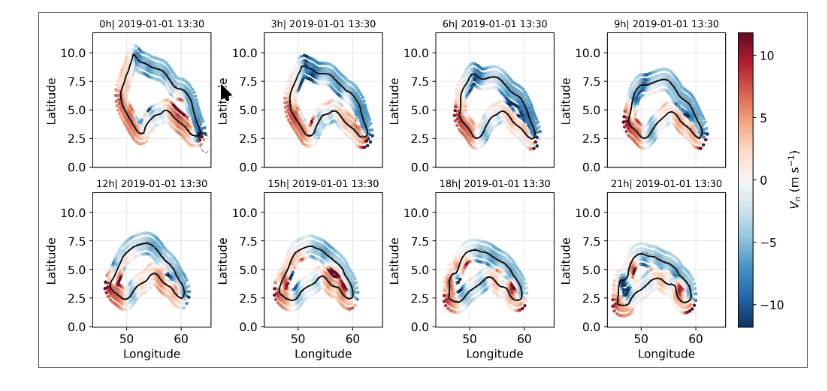

Research
A Langragian motion budget for High-CWV “Vapor Lakes”
In this study, multiple water vapor lakes are tracked using MERRA-2 reanalysis over the Equatorial Indian Ocean. These synoptic scale vapor lakes are defined at 55mm critical threshold of vertically integrated column water vapor. Despite strong imposed precipitation drying, these systems persists for extended periods, raising questions on how these vapor lakes are replenished and how they propagate over time. They have significant contributions to East African rainfall and also serve as a observational laboratory for understanding convective–radiative feedback within self aggregating convection. A Lagrangian approach is developed by linking Eulerian moisture budget terms to compute the normal motion of the lake boundary, and by quantifying what acts as the driver and what acts as the adjustor in the dynamics of vapor lakes. This involves separating dynamical, physical, and analysis moisture tendencies, and diagnosing moisture pathways using both column-integrated and vertically resolved fields. Extensions of this study includes using M2AMIP simulations and idealized MPAS-based homogenized water vapor pertubations perturbation experiments.

An example of a normal contour motion of a Water Vapor lake propagating westward over a day starting from 1 January 2019. Red indicates positive normal motion (growth), and blue indicates negative normal motion (shrinkage).
Entrainment and Structure of Tropical Deep Convection
How much environmental air mixes into a rising convective updraft through bulk entrainment is linked to how high storms grow, how much rain they produce, and how well models represent tropical convection. In this study, a bulk entrainment proxy is estimated from a decade of CloudSat radar observations combined with ECMWF reanalysis thermodynamic profiles. These proxies indicates the difference between where storms actually stop rising and where undiluted parcel theory predicts they should stop. Applied across the tropics (2006–2016), oceanic convection is observed to entrain more than convection over land. Entrainment over land has a strong diurnal cycle and seasonal variations. Depending on initialization of the rising parcel matters more than assumptions about moist ascent physics for the climatological observed variations.